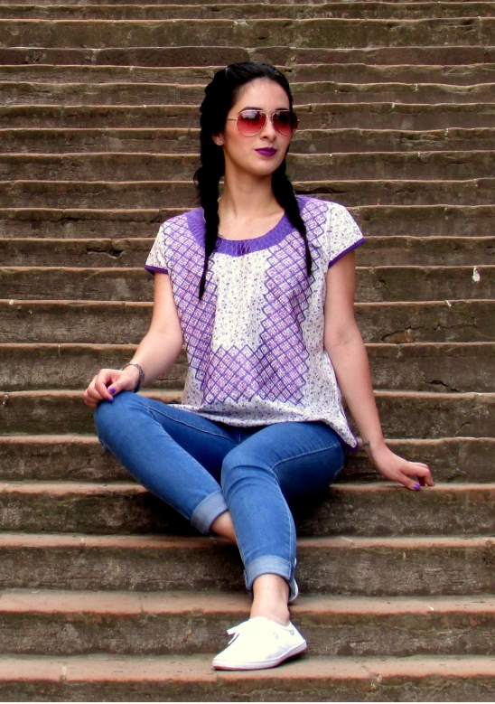

Moda Artesanal
Ubicada en Santa Cruz Xoxocotlàn,Oaxaca. TLAMACH trae la mejor calidad de lienzos y ropa artesanal.Somos tendencia ya que estamos a la conquista nuevos clientes diariamente desde 2022.
MISIÓN
"Lograr el rescate y la preservación de esta actividad, elevando con ello no sólo la calidad y los niveles de vida del sector artesanal,
y de nuestra identidad..""
Encontraràs
Blusas, batas, faldas o vestidos con bordados o tejidos sencillos con los diseños básicos de las prendas artesanales; los precios de estas prendas son menores en comparación a aquellas de diseños más elaborados, los materiales que se utilizan para su elaboración son telas de algodón, por lo que las hace prendas muy cómodas y fresca
Prendas elegantes: Engloba aquellas prendas de vestir que son elaboradas mediante procesos que requieren más esfuerzo y tiempo por parte de quienes las crean, tal como los huipiles elaborados con telar, los huipiles completamente bordados a mano o máquina, las prendas estilizadas con bordados istmeños y las guayaberas entre otros. Los materiales utilizados para la elaboración de estas prendas incluyen telas de algodón como también aquellas telas que tiene poliéster dentro de su composición. Generalmente este tipo de prendas son creadas con mejores acabados, lo cual refleja una mejor calidad en su confección, por lo tanto, los precios son un poco más elevados en comparación a las otras clasificaciones.
Ofrecemos profesionales experimentados que están constantemente observando los cambios y movimiento en el mundo de la moda,El proceso artesanal es la manera más antigua de producir productos para el uso diario , requiere de habilidades manuales que se van transmitiendo de generación en generación afinando técnicas y creando lo que conocemos.
Visitanos en:
Mercado Municipal de Santa Cruz,Xoxocotlan, Oaxaca.
Por que preferir Tlamach
- Atencion personalizada a clientes
- Calidad en los productos
- Diseños Exclusivos
- Elaboracion Artesanal
- Variedad de Productos
- Profesionales calificados